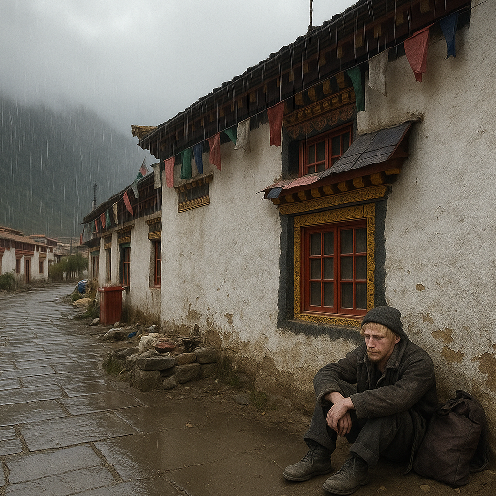

📍 Chapter 1
In the beginning, life was great. He and mom were about to take a hike to a Tibetan city. Until the day his mom died in an avalanche while they were hiking through the mountains on their way to Tibet. When Mike had reached there, He thought he knew his friends but they scammed him then ran away. Mike ended up becoming homeless and this is when he meets Yeshi, the most compassionate coder of them all.